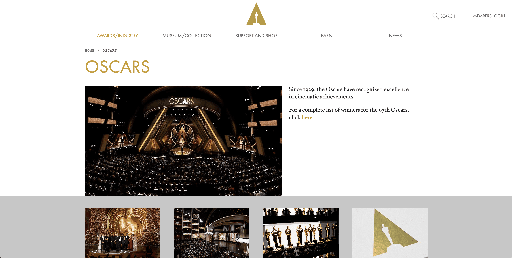
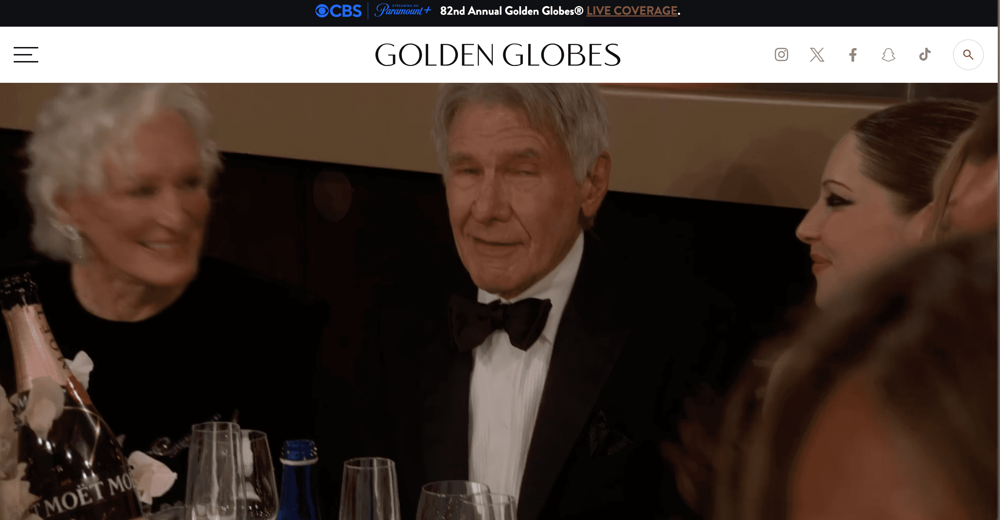
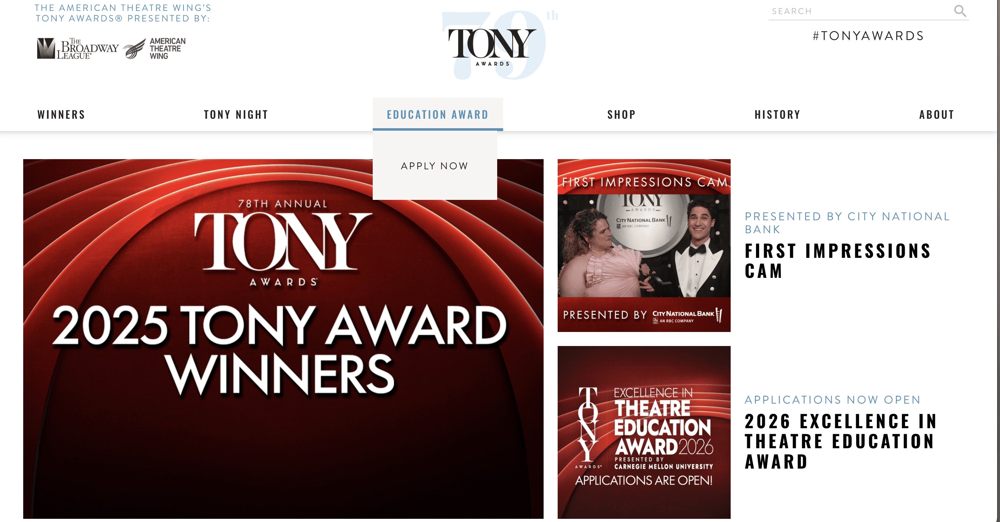
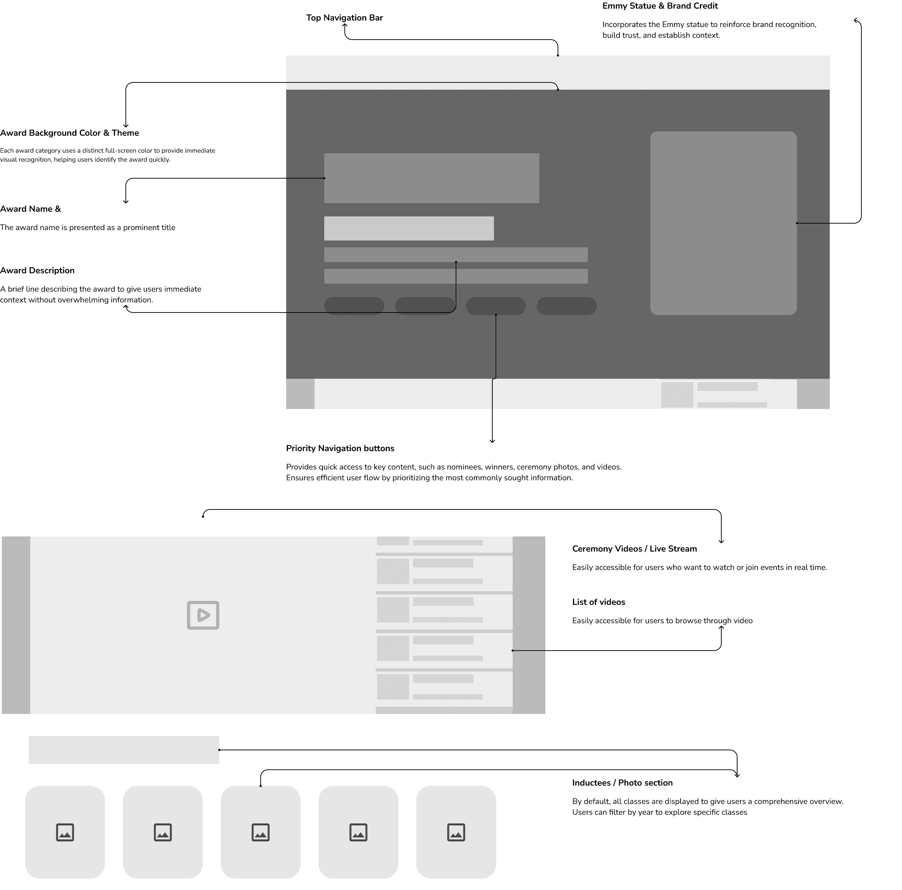
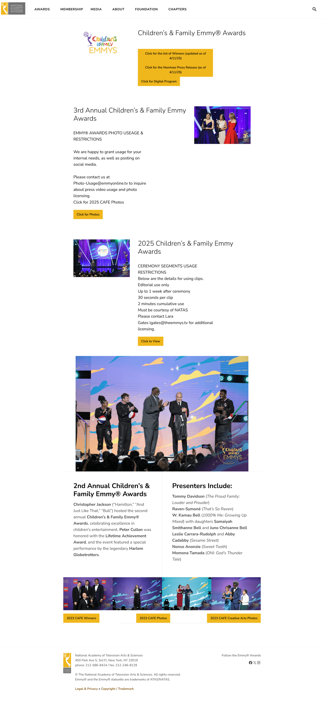
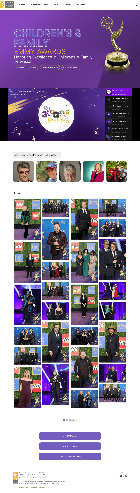

03 / Freelance · Emmys website redesign
The Emmys
Client work as a freelance designer at a small studio subcontracted for the Emmys website.
One structure for many award categories.
A modular website redesign that helps visitors find awards, nominees and winners across categories.

THE BRIEF / 60-SECOND OVERVIEW
One structure for many award categories.
The problem
Every category followed a different format. Visitors had to relearn where to look each time they changed categories, and long blocks of text made key information harder to scan.
The approach
I compared how other awards sites handled hierarchy and year-based browsing, then used a modular category template to give recurring information a consistent home. The layout can accommodate distinct content while keeping common navigation cues predictable.
01 / DISCOVERY
Find the structure beneath the visual differences
I reviewed the award categories alongside three other award websites. The Oscars offered strong hierarchy and a coherent visual identity. The Golden Globes used rich imagery but relied heavily on text. The Tony Awards made year-based browsing easy. These comparisons helped separate the needs of visitors from the styling of an awards brand.



02 / INFORMATION ARCHITECTURE
Build a repeatable category experience
Each category previously had its own format. I developed the information architecture and wireframes around a shared template so visitors could carry what they learned from one category to another. The recurring structure creates a consistent place for key award information while accommodating different content.

03 / DESIGN DECISION
Standardize the navigation, allow the content to vary
A modular template creates consistency but has to accommodate different amounts of content. The design balances a common hierarchy with flexible sections. This makes the template a content-management decision as well as a visual decision. It also creates a repeatable structure for future page updates.
04 / SOLUTION
From dense pages to a shared visual hierarchy
The final design brings the award sections into a more consistent system. Compare the original page with the redesign below. The work focuses on how visitors scan the information, recognize sections and continue browsing.


05 / REFLECTION
Evaluate the template across categories
Feedback informed refinement of the visual design and responsive experience. The next evaluation would ask visitors to find an award winner in two different categories and ask editors to update both pages. This would show whether the shared structure improves navigation and publishing in practice. Quantitative outcomes have yet to be documented.